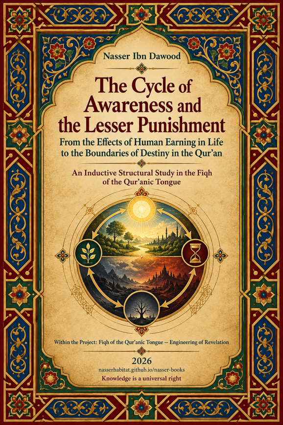

Nasser Ibn Dawood

Text extracted from the author-supplied Word edition; consult the original source.
Preparing the reader…
The Cycle of Awareness and the Lesser Punishment
From the Effects of Human Earning in Life to the Boundaries of Destiny in the Qur’an
A Condensed Conceptual Adaptation of the Arabic Edition
A Structural-Inductive Study in the Fiqh of the Qur’anic Tongue
Nasser Ibn Dawood
2026
Project: Fiqh of the Qur’anic Tongue – Engineering of Revelation
Official Library: nasserhabitat.github.io/nasser-books/
Condensed conceptual adaptation for global readers
I. The Global Knowledge Manifesto
Knowledge is a universal right. The author firmly believes that wisdom should not be locked behind paywalls or language barriers.
Global Access Policy: All books in this library are available for free in multiple digital formats (PDF, HTML, DOCX, TXT).
The Digital Library: As of early 2026, the collection hosts 68 volumes (34 in Arabic and 34 in English), fully optimized for AI-assisted research and digital archiving.
Official Platforms: Main Website: nasserhabitat.github.io/nasser-books/
GitHub: nasserhabitat/nasser-books
This manifesto is reproduced here as supplied by the author for this condensed edition.
II. Translator’s Note: The Bridge of Meaning
This English edition is a condensed conceptual adaptation. It is not a word-for-word translation, but rather an "extraction of essence." It presents the core philosophical framework in accessible English, omitting the exhaustive linguistic debates and classical references found in the original Arabic text.
For the academic researcher: The original Arabic version remains the primary source for comprehensive linguistic analysis, detailed exegesis (Tafsir), and the complete bibliography.
This adaptation also preserves the methodological status of the Arabic edition. A claim marked OPEN remains open; a CANDIDATE remains a candidate; a RESISTED or STRONGLY RESISTED claim is not revived through simplification; and a CLOSED result remains closed only within its declared scope. The aim is clarity without scientific inflation.
Key Qur’anic terms are sometimes retained in transliteration—such as nafs, tawaffī, barzakh, and baʿth—when a single English equivalent would prematurely narrow the field under study.
Contents
1. What This Book Is Trying to Do
2. Method Before Metaphysics
3. The Human Subject: Nafs, Responsibility, and the Inner Field
4. From Earning to Effect: The Lesser Punishment Reconsidered
5. Tawaffī, Death, Barzakh, and Resurrection
6. The Reverse Audit of Recurrent Earthly Lives
7. Return Within the Lifetime of Responsibility
8. Identity, Record, Witness, Judgment, and Outcome
9. Two Deaths, Two Lives, and the Discipline of Number
10. Final Synthesis: A Constrained Cycle of Awareness
11. Open Research Agenda
12. Glossary and Status Register
1. What This Book Is Trying to Do
This book began from a bold question. A network of Qur’anic passages speaks of human earning, guidance and turning away, the “lesser punishment,” tawaffī, death, holding and sending, barzakh, resurrection, new origination, two deaths and two lives, judgment, and final outcome. Could these elements form a larger cycle of human development—perhaps even repeated earthly lives through which awareness is refined?
The earlier draft was attracted to that possibility. It could gather many scattered passages into one powerful explanatory picture. Yet the central methodological lesson of the mature book is that explanatory elegance is not proof. A model may connect many verses and still fail when resistant passages are brought into the test.
The final work therefore changes the question. It no longer asks, “How can we prove a cycle of repeated earthly return?” It asks instead: “What does the Qur’an actually establish about human awareness, responsibility, correction, death, boundary, resurrection, and outcome? What remains a hypothesis? What is resisted by the text? And where must inquiry stop?”
The book’s deepest aim is educational. It does not ask the reader to inherit the author’s conclusion. It asks the reader to inherit the ability to test conclusions—including the author’s own.
Do not fill an epistemic gap with belief. Turn it into a research question.